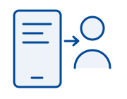
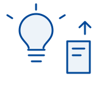
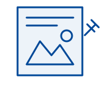
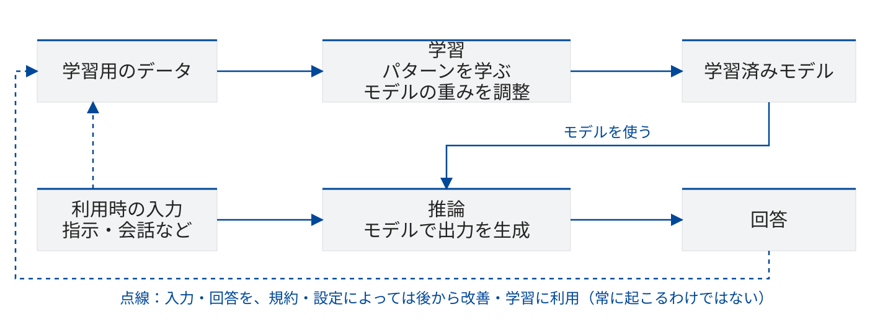
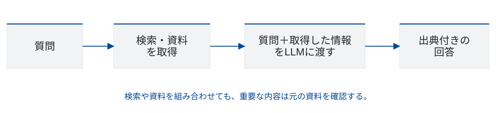
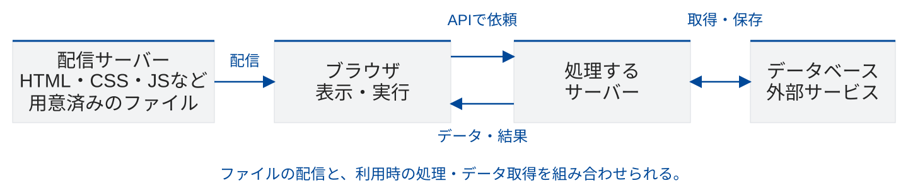
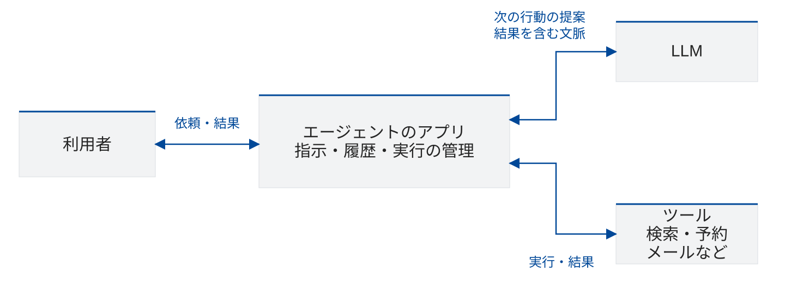
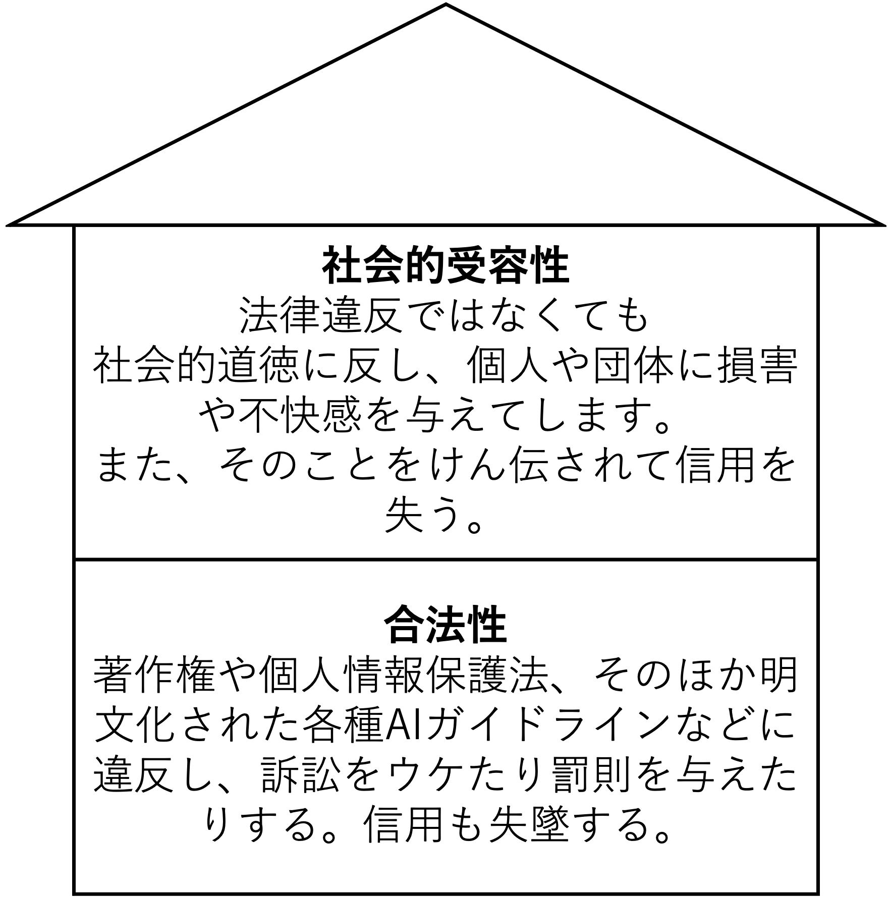
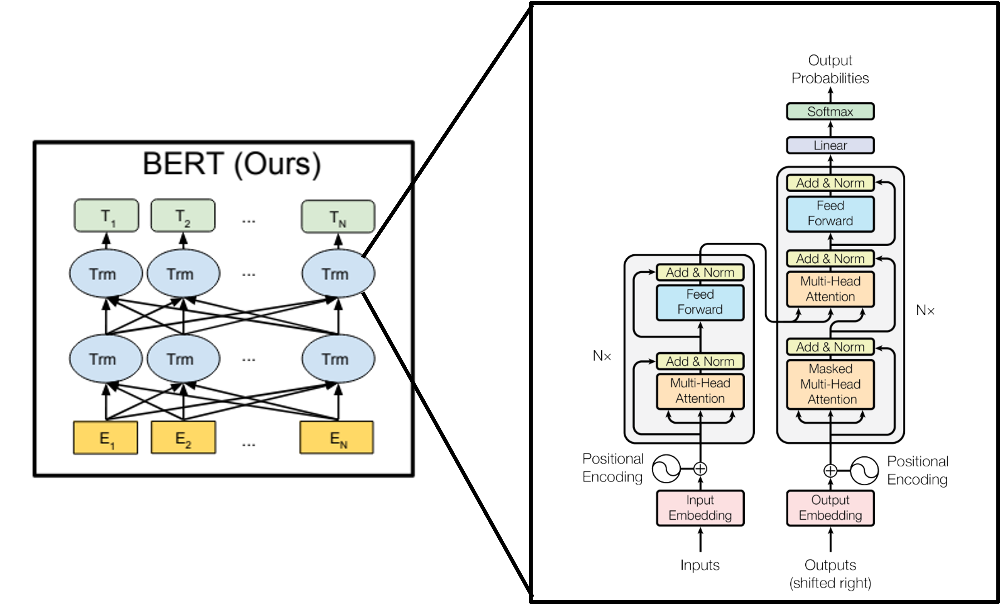
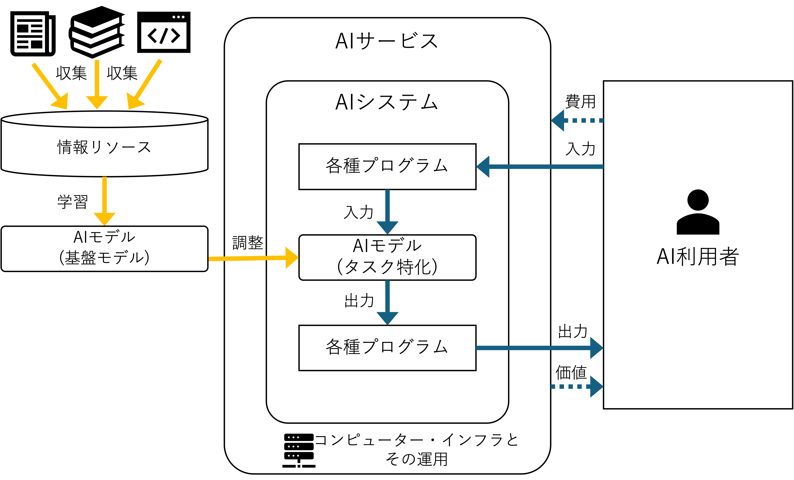

前半：知る｜100分
| 内容 | 時間 |
|---|---|
| 導入・前回の振り返り | 15分 |
| AI Studioの利用条件 | 27分 |
| AIとアプリの仕組み・質問 | 58分 |
| 合計 | 100分 |
プログラミング演習｜2026年度・第3回
プログラミング演習｜2026年度・第3回
| 回数・日程 | テーマ | 担当講師 |
|---|---|---|
| 1（9/25） | AI基礎 | 伊藤、髙田 |
| 2（10/2） | プロンプトエンジニアリング | 髙田 |
| 3（10/9） | AIの活用と倫理 | 伊藤 |
| 4（10/16） | AIを活用したアプリ生成 ① | 伊藤 |
| 5（10/23） | AIを活用したアプリ生成 ② | 髙田 |
| 6（11/6） | 総合演習 | 髙田、伊藤 |
| 7（11/13） | 総合演習 | 伊藤、髙田 |
プログラミング演習｜2026年度・第3回
| 内容 | 時間 |
|---|---|
| 導入・前回の振り返り | 15分 |
| AI Studioの利用条件 | 27分 |
| AIとアプリの仕組み・質問 | 58分 |
| 合計 | 100分 |
| 内容 | 時間 |
|---|---|
| 世界・企業・仕事とAI | 15分 |
| 事例から倫理と責任を考える | 20分 |
| 自分のアプリの考察・発表・振り返り | 65分 |
| 合計 | 100分 |
今日の道順｜いまここ
左を上から下へ → 休憩 → 右を上から下へ
01 / 7 導入・前回の振り返り課題｜Slack投稿｜6分
おすすめの京都の観光地は？
おすすめの場所：〇〇
散歩や休憩におすすめの場所でもOK。
誰の、どんな場面を助けるアプリ？
私は、【誰】が【何をしたいとき】に、 【どんな手助け】をする チャットアプリを作りました。
まだ作っていない方は、今思いついたチャットアプリの案を紹介しましょう。文末は「作りたいです」でOK。
授業のSlackへ、それぞれ1投稿。上の型を使いましょう。
01 / 7 導入・前回の振り返り
| テーマ | 期待・不安・疑問の要約 |
|---|---|
| 制作・学習への期待 | アイデアを形にしたい。理解や制作を助けてほしい。 |
| 情報への不安 | 正しさや根拠を、どう確かめればよいか。 |
| 自分の力との関係 | 頼りすぎず、自分で考える力や制作する力を保ちたい。 |
| 人との関係 | 相談相手として便利だが、信頼や依存の境界が気になる。 |
| 社会・仕組みへの疑問 | 情報の扱い、仕事への影響、AIの能力や限界を知りたい。 |
自分がアプリを作ったときに気になったことも、思い出しましょう。
01 / 7 導入・前回の振り返り授業用の架空の場面
友人の名前や相談をAIに貼り付け、返事に使う。

未公開の事業計画をAIに入力。

作家の作品から画像を作り、AI利用を説明せず公開。

AIが答えた提出期限を信じ、大学の情報は確認しない。
01 / 7 導入・前回の振り返り課題｜Slack投稿｜7分
選んだ場面（1〜4）：
誰が、何で困りそう？：選ぶ1分 → 考えてSlackへ投稿4分 → 数名が全体に発表2分
今日の道順｜いまここ
左を上から下へ → 休憩 → 右を上から下へ
02 / 7 AI Studioの利用条件課題｜Slack投稿｜4分
はい／いいえ／条件による／分からない
① 改善への利用：
② 人が読む：
③ 課金なし・ありで同じ：
④ Googleがすべて責任を持つ：02 / 7 AI Studioの利用条件課題｜Slack投稿｜15分
A〜Dから1つ選び、原文の見出しと記述を確かめましょう。
| 選択肢 | 探す項目 | 確かめること |
|---|---|---|
| A | Unpaid Services / How Google Uses Your Data | 改善への利用、人による確認、送ってはいけない情報 |
| B | Paid Services / How Google Uses Your Data | 無償サービスとの違い、保存やログの扱い |
| C | Use of Generated Content | 生成物の扱い、利用・共有する人の責任 |
| D | Age Requirements / Use Restrictions | 利用者・用途の条件、アプリを提供する際の条件 |
Slackへ：選択肢／予想との違い／原文の根拠・条件／自分への影響
02 / 7 AI Studioの利用条件共有して確認｜8分規約：2026年10月6日確認
AI Studio：アカウントが有効なCloud Billing付きプロジェクトへアクセスできる場合、またはWorkspaceの企業アカウントでは有償扱い。API：実際にアクセスするプロジェクトの課金設定で判断。
02 / 7 AI Studioの利用条件共有の続き規約：2026年10月6日確認
今日の道順｜いまここ
左を上から下へ → 休憩 → 右を上から下へ
03 / 7 AIとアプリの仕組み

03 / 7 AIとアプリの仕組み
03 / 7 AIとアプリの仕組み
03 / 7 AIとアプリの仕組み

毒キノコの誤食とAI判定を扱った記事から考える。食用と確実に判断できないキノコは採らない・食べない。
画像の誤識別と、生成した説明の誤りは別。見出しだけで事故の技術的原因は断定できない。
03 / 7 AIとアプリの仕組み

| 構成 | ざっくりした仕組み | 例 |
|---|---|---|
| 静的サイト | 用意済みのファイルをブラウザが受け取り、表示・実行する。 | 授業スライド、ブラウザ内の計算ツール |
| 動的サイト・アプリ | 入力に応じ、サーバーがデータを取得・処理して結果を返す。 | 履歴を表示するアプリ、AIチャット |
03 / 7 AIとアプリの仕組み実習｜5分
ChatGPTなど、使えるAIで下の指示を入力。
HTMLファイルを作ってもらい、cafe.html としてダウンロード。
保存したファイルをダブルクリック。カフェのサイトを見てみよう。
1つのhtmlファイルでいい感じのカフェのサイトをつくって。続けて「cafe.htmlとしてダウンロードできるファイルにして。」
コードだけが出たら、全文をコピーしてテキストエディタで cafe.html として保存。
03 / 7 AIとアプリの仕組み
03 / 7 AIとアプリの仕組み
| 用語 | アプリの中での役割 |
|---|---|
| AIモデル | 入力に応じて出力を生成する部分。 |
| AIサービス・アプリ | モデルに加え、画面、履歴、検索などを組み合わせて提供するもの。 |
| API | アプリから別のサービスへ処理を依頼するための窓口。 |
| APIキー | APIの利用を識別・認証するために使う情報。利用枠や料金にも関係する。 |
現行のAI Studio Buildは、APIキーをサーバー側の秘密情報として設定する構成。図のどこに置く情報か、確かめましょう。
03 / 7 AIとアプリの仕組み

03 / 7 AIとアプリの仕組み
03 / 7 AIとアプリの仕組み課題｜Slack投稿｜10分
| 用語 | 質問の入口となる説明 |
|---|---|
| 学習・推論 | 学習はモデルの重みを調整すること。推論は学習済みモデルで出力を作ること。 |
| トークン | 文章を処理する単位。前回のTokenizerの体験を思い出しましょう。 |
| ニューラルネットワーク | 計算のつながりで、データからパターンを学ぶモデル。 |
| ディープラーニング | 多層のニューラルネットワークでパターンを学ぶ方法。 |
| トランスフォーマー・Attention | 文脈の中の情報の関係を扱う構造と仕組み。 |
AIに聞く6分 → 確認して約100文字にまとめる3分 → Slackへ1分。
AIが示したリンクは、開いて内容を確認しよう。
用語： 自分の言葉での説明：
今日の道順｜いまここ
左を上から下へ → 休憩 → 右を上から下へ
04 / 7 世界・企業・仕事とAI課題｜Slack投稿｜1分
AIの便利さを支えているのは、〇〇。まじめな答えも、大喜利のような答えもOK！
自由に発想して、他の人の答えも見てみよう。
04 / 7 世界・企業・仕事とAI
米中のモデル開発競争、自国のAI基盤を持とうとする各国。
先端AIチップを支える、台湾の製造企業。
2030年のデータセンター電力消費は約945TWhの見通し。
945TWhは全データセンターの将来推計。AIだけの実測値ではありません。
04 / 7 世界・企業・仕事とAI
DeNA：プロトタイプへの活用。 みずほ：現場社員によるアプリ制作。
みずほの取り組みは2026年3月実施、記事は4月22日公開。
04 / 7 世界・企業・仕事とAI課題｜Slack投稿｜10分
身近な仕事を1つ選び、「AIに任せる／人と組み合わせる／人が担う」を記入。
| 工程の例 | 分担の予想 | その理由 |
|---|---|---|
| 依頼の意図を聞く | ||
| アイデア・下書きを作る | ||
| 正確さ・権利・品質を確認する | ||
| 公開を決め、相手に説明する |
個人で分類5分 → 近くの人と共有3分 → Slackへ2分
仕事・作業： AIに任せる？（理由もひとこと）：
今日の道順｜いまここ
左を上から下へ → 休憩 → 右を上から下へ
05 / 7 事例から倫理と責任を考える

合法性：法律に照らして、使い方を確認する。
社会的受容性：誰かに損害や不快感を与えないか、信頼を損なわないかを考える。
「法律違反ではない」だけで判断せず、影響を受ける人の立場でも考えよう。
概念の整理用の図です。国のガイドラインは法律そのものとは区別します。 補足資料（2025年度）
05 / 7 事例から倫理と責任を考える課題｜Slack投稿｜5分個人の体験は話さなくてOK
05 / 7 事例から倫理と責任を考える課題｜Slack投稿｜5分
05 / 7 事例から倫理と責任を考える
05 / 7 事例から倫理と責任を考える出典：2026年10月6日確認
| 区分・資料 | 押さえること | 自分のアプリで確認すること |
|---|---|---|
| 法律：AI法 | 2025年9月1日全面施行。AI活用の推進とリスク対応の枠組み。 | 個人情報保護法・著作権法などの確認も必要。 |
| 法律：個人情報保護法 | 入力の利用目的や、サービス側の学習利用を確認。 | 他人の個人データは、利用目的・本人同意・第三者提供の条件を確認。 |
| 法律：著作権法 | 学習と生成・利用を分け、使い方ごとに判断。 | 入力の利用権限、生成物の類似、公開・共有の方法を確認。 |
| 指針：AI事業者ガイドライン第1.2版 | 開発・提供・利用のリスク対応を考える指針。 | 安全・公平・情報の保護・説明と責任を点検。 |
| 規約：AI Studio・Gemini API | サービスを使うために同意する条件。 | 年齢・用途・情報の扱い・生成物の責任を確認。 |
規約に同意しても、法律上の義務や他の人への配慮がなくなるわけではありません。
AI Studio・Gemini API規約 ・ 内閣府：AI法 ・ 個人情報保護委員会 ・ 文化庁：AIと著作権 ・ AI事業者ガイドライン
05 / 7 事例から倫理と責任を考える課題｜Slack投稿｜4分
| 観点 | 自分のアプリへの問い |
|---|---|
| 正確さ・安全性 | 誤情報や誤判定が、身体・心・財産への被害につながらない？ |
| セキュリティ | 許可のない人のアクセスや操作、情報流出を防げる？ |
| 公平性 | 特定の人が不利になる扱いをしていない？ |
| 透明性・説明可能性 | AIを使うこと、限界、判断の根拠をどう伝える？ |
| プライバシー・権利 | 誰の情報・作品を、どこまで使ってよい？ |
| 人間中心・自律性 | 過度な依存や、本人の判断を妨げる設計になっていない？ |
| 説明・責任 | 問題が起きたら誰に連絡し、どう修正・救済できる？ |
今日の道順｜いまここ
左を上から下へ → 休憩 → 右を上から下へ
06 / 7 自分のアプリの考察・発表・振り返り課題｜Slack投稿｜15分
前回のアプリ紹介をコピーし、残りを書いてSlackへ。
どんなアプリ？（紹介をコピペ）：
誰が、何で困りそう？：
そう考えた理由：
使う人・作る人が気をつけること：
まだ分からないこと：06 / 7 自分のアプリの考察・発表・振り返り課題｜Slack投稿｜15分
Buildへ一般化したレポートを入力。学生の写真・個別の相談は入力しない。
次の内容を、発表用のスライド1枚のWebページにしてください。 16:9、白い背景、大きい文字で、1画面に収めてください。 項目：どんなアプリ／誰が困りそうか／理由／気をつけること／分からないこと。 書いていないことは足さないでください。 【自分の考え】ここに貼り付ける。
整理・生成7分 → 内容と表示を確認5分 → 自分の言葉で説明する練習3分
Slackへ：発表画面のスクリーンショット。生成が遅ければ考察の投稿で発表してOK。
06 / 7 自分のアプリの考察・発表・振り返り共有・発表 → Slack課題｜30分
1人3分ずつ説明し、気づいたことを伝える。
残り4分で、自分の考えを直す。
3名が、1人3分ずつ発表。
質問・コメントに6分。
下の型をコピーして、Slackへ。
気づいたこと：
自分のアプリで気をつけたいこと：06 / 7 自分のアプリの考察・発表・振り返り


補足の参考図です。現行サービスの実装そのものを示す図ではありません。
補足資料（2025年度） ・ Attention Is All You Need ・ Scaling Laws ・ 架空の判例が使われた事例 ・ サンプル回答一覧
今日の道順｜いまここ
左を上から下へ → 休憩 → 右を上から下へ
07 / 7 宿題：利用規約を10文で宿題｜Slack提出｜10文
Slackへ：アプリ名・用途＋番号を付けた10文。期限は講師の案内を確認。
例：「このアプリの答えには、間違いが含まれることがあります。」
未確認の保存・学習利用は約束しない。作る側の対応も考えましょう。